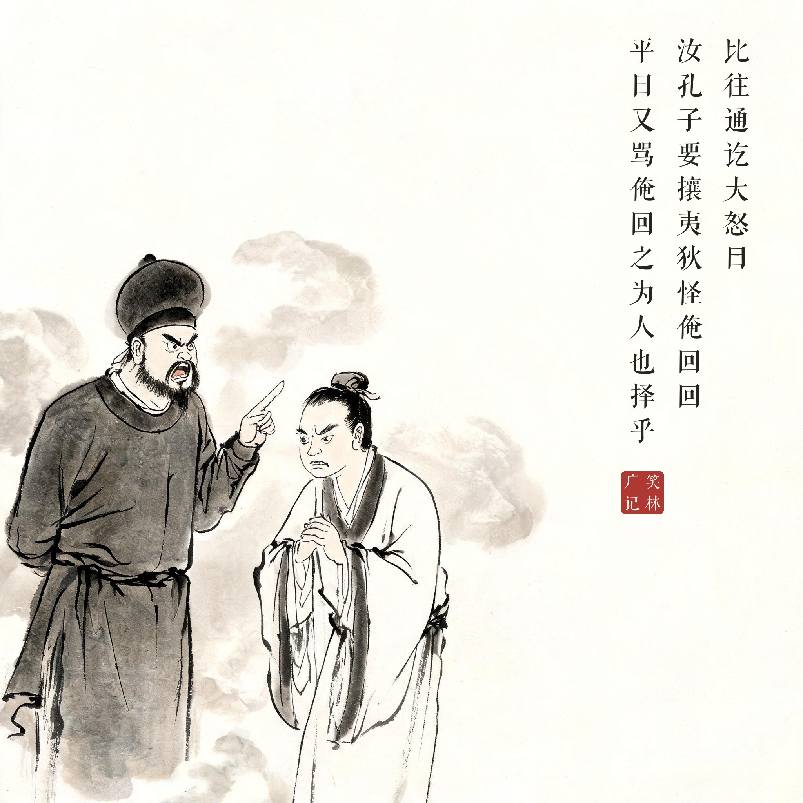

《笑林广记 · 腐流部》（[清]游戏主人纂集）
孔子在陈绝粮，命颜子往回回国借之，以其名与国号相同，冀有情熟。比往通讫，大怒曰："汝孔子要攘夷狄，怪俺回回，平日又骂俺回之为人也择（贼）乎！"粮断不与。颜子怏怏而归。子贡请往，自称平昔极奉承，常曰："赐也何敢望回回。"群回大喜，以白粮一担，先令携去，许以陆续运付。子贡归，述之夫子，孔子攒眉曰："粮便骗了一担，只是文理不通。"
孔子在陈国断了粮，派颜回去回回国借粮，指望他名字与国号相同，多少有些情面。谁知颜回一到，对方大怒："你们孔子要攘除夷狄，拿俺回回当外人，平日还骂俺'回之为人也择乎'！"断然不借，颜回怏怏而归。子贡请命前往，自称平生最会奉承，常说："赐呀，何敢望回回！"回回们大喜，送上白米一担让他先带回去，还答应陆续运来。子贡回来照实一说，孔子皱眉道："粮是骗来了一担，只是这话文理不通。"
一场跨国借粮全靠谐音外交：颜回输在名字撞了国号，子贡赢在多添一个"回"字。回回把《中庸》里夸颜回"择乎中庸"的话，听成了骂自己"为人也贼"，于是翻脸；子贡一句"赐也何敢望回回"，又把脸翻了回来。孔子最后那句评语最妙——骗粮可以，文理不通不行。